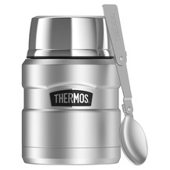
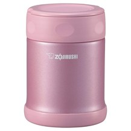

We toted 7 food thermoses around to find the best one for keeping your lunch hot.
The Best All-Inclusive Thermos: Thermos King Food Jar with Folding Spoon
It should come as no surprise that the Thermos brand makes top-performing hot food containers. We particularly found the King Food Jar impressive. Its double-wall vacuum insulation kept our creamy squash soup hot from morning to lunch (roughly five hours), all while remaining cool to the touch externally. Though a little wider than some of the other containers we tested, the Thermos has a grooved design that makes it easy to hold. It comes with a telescoping stainless steel spoon, which adds some weight to the overall product but is overall quite handy. We found eating directly from the main container to be easy, but in classic thermos construction, the lid doubles as a miniature insulated serving bowl. One Amazon reviewer notes: "There is just enough room to fold a small paper towel inside the cup between the thermos and the stopper so you can clean up after your meal."
When it came to cleaning, there were no challenging nooks and crannies to wash. The twisting stopper that houses the spoon is one solid piece with a detachable rubber ring, and it doesn't hide any old food. Although dishwasher-safe for the top rack, hand-washing is recommended. The container is solid enough to withstand a dozen tumbles or more, though it does come with a five-year warranty.
BUY IT: Thermos Stainless King (16-Ounce) Food Jar with Folding Spoon, $20 on Amazon
The Best Standard Food Thermos: Zojirushi Stainless Steel Food Jar
We loved the heat-holding power of this Japanese brand's travel mug in a previous product test, and we were similarly fans of its food thermos. After five hours, the soup was still hot and enjoyable to eat without reheating. Made from 18/8 stainless steel, the vacuum-insulated container is said to resist rusting, tarnishing, staining, and leaking (this goes for soup and harmful chemicals). Plus, the thermal insulation of the product has a five-year warranty. The opening is wide enough to eat out of with any size utensil.
The design of the Zojirushi food jar is sleek and fun, and it comes in a variety of colors like shiny blue, pink, cream, dark brown, and stainless steel. We tested the 11.8-ounce option and even in small hands, the container is easy to hold and carry. If you want a larger one, it's available in 16.9- and 25-ounce versions, too. It took up little space in a tote bag and would fit nicely in most lunch bags. Thanks to the ease of disassembly, wide-mouth opening, and nonstick interior coating, the cleaning process was struggle-free. It's not dishwasher-safe, but neither are most thermoses.
BUY IT: Zojirushi Stainless Steel Food Jar (11.8-Ounce), $24 on Amazon
Factors We Evaluated
1. does the thermos remain heat?
We were looking for a thermos that kept food hot after five hours. We didn't measure the temperature with a thermometer, but simply checked by touch and tasted the contents to determine if they were satisfactory to consume.
2. does it leak?
Naturally, we were looking for a leak-free thermos. We needed it to survive a jerky subway ride and the motions of walking up and down stairs. If this thermos was sent off in a lunchbox, would it survive the school bus ride or a trip to the playground?
Is it easy to hold and eat from?
We didn't want a thermos that was too cumbersome or heavy, as this would surely make someone give up on bringing their lunch to work. We wanted one that was easy to eat out of, too. Why dirty another container?
4. Is it easy to clean?
We paid attention to how easy each thermos was to disassemble and reassemble. Is it dishwasher-safe? Is it easy to wash by hand? Are there too many nooks and crannies for food to hide in?
The Takeaway
Buy a Thermos King Food Jar for a compact, all things included experience. It has a spoon and a bowl, and will keep your lunch hot all day. If you're looking for something sleeker and smaller, get the Zojirushi Food Jar.
CONTACT
Fan? Drop a note!
Chicago, US
Phone: +00 991561234
Email: legal@foodelico.com
 Kshitiz Goel
Kshitiz Goel